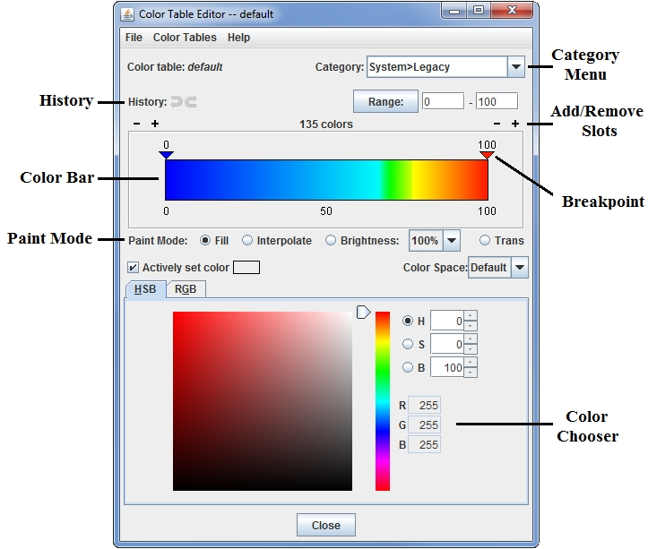
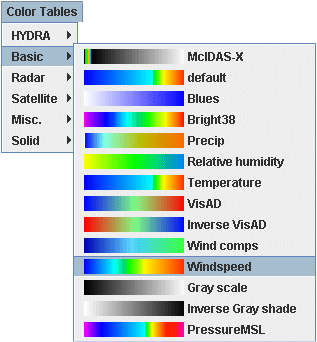
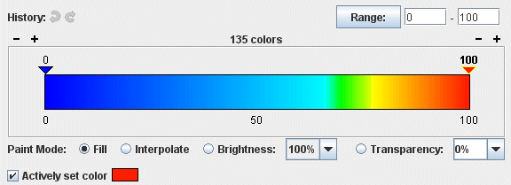
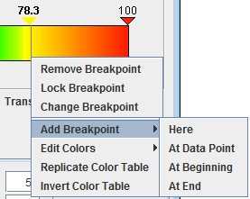
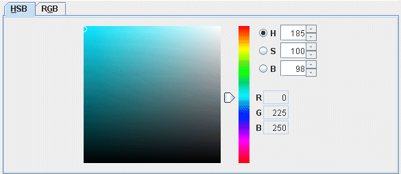
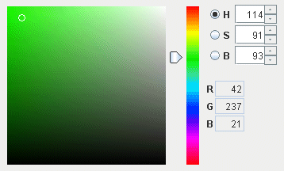
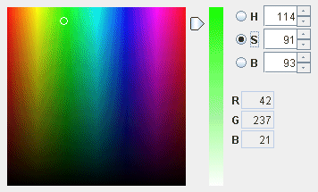
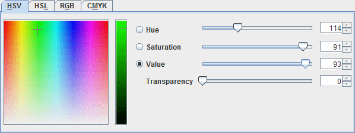

Color Table Editor
The Color Table Editor supports editing existing color tables and creating
new ones. A color table is an ordered collection of colors that is used to
color a display according to a range of data values.

Image 1: The Color Table Editor
Starting the Color Table Editor
The Color Table Editor can be used stand-alone by selecting the Tools->Color
Tables menu item in the Main Display window. It can also be used or in conjunction
with a particular layer by right-clicking on the layer's color bar in the Legend and selecting Edit Color Table,
or through the layer's Edit menu (Edit->Color Table->Edit Color Table).
You can also click on the button that represents the name of the color bar in the Layer Controls tab and select Edit Color Table.
The Color Table Editor starts with a color table loaded in it. If you are
working with a data display and you open the Color Table Editor through the Layer Controls tab of the Data Explorer, the color table in the editor is the same as in
the display. If you want to use or edit a different color table, use the Color
Tables menu to select from the categorized list of color tables:

Image 2: The Color Tables Menu
Color tables are grouped into categories. Click on a color table to bring it into the Color Table Editor. To change to the newly selected color table for a display on the Main Display window, click OK or Apply at the bottom of the Color Table Editor. Apply will save changes to the color table, while keeping the Color Table Editor open, and OK will save any changes to the color table and close the Color Table Editor. Also, when editing a color table that is currently being used to display a layer in the Main Display window, there is an Auto update checkbox on the bottom right of the Color Table Editor. When this box is checked, any changes made to the color table will be applied directly to the display in the Main Display window. If you are making several changes to the color bar at once, and you have a lot of data displayed in the Main Display, it is recommended that you do not have this option turned on, as it will use up more memory. Once done making changes to the color bar, click Apply or OK to apply your changes to the displayed data.

Image 3: The Color Legend
Properties
- Color table - Lists the name of the color table currently being displayed in the Color Table Editor.
- Category - Lists out the category that the color table currently being displayed in the Color Table Editor is under. The category is utilized to help organize the color bars in the Color Tables menu of the Color Table Editor. In the example above, the color table for Temperature can be found under the Color Tables->System menu item. You can enter your own values into this text field to organize your color bars in your desired fashion. If you wish to use multiple levels of menus, you can use the ">" symbol between different menu levels. For example, if you have a variety of color bars to be utilized in different weather conditions, and you are making a color bar for CAPE, you can specify a Category of "Weather > Severe". If you give your color bar a name of CAPE, once your color bar is saved, it can be found under the Color Tables->Weather->Severe Weather->Cape menu item of the Color Table Editor.
- History - Allows you to step forward and backward through changes you have made. Using Shift+click on these buttons will step forward/back 10 changes.
- - Sets the minimum and maximum data values on the color bar, with minimum being the breakpoint at the left end of the color bar, and maximum being the breakpoint on the right end of the color bar. You can change these values by typing values into the fields and pressing Enter or by clicking .
- Colors - Shows the number of colors currently in the color bar. This is how many segments your color bar is broken up into. You can decrease or decrease the number of colors by clicking on the buttons above the left and right ends of the color bar. You can add/remove 10 colors at once by using Shift+click on these buttons. New colors are added or removed at each end of the legend with the same color
as the end color. The minimum number of colors required in the color bar is five, and there is no upper limit. The more colors you have in your color bar, the smoother the transition of colors between break points will be if interpolating colors.
- Color Bar - Displays the current color bar that you are working with. Any changes that you make in the Color Table Editor window will be applied to this color bar.
- Paint Mode - Determines how the colors will be applied to the color bar. These controls are described in the section below.
Painting and Editing Colors
You can "paint" in the color table by left-clicking and dragging the mouse within
it. When your mouse is over the color table the cursor will change to a paintbrush
and a gray line is drawn to indicate the position of the cursor.
The type of painting is specified by the Paint Mode buttons.
- Fill - Fills the color table with the currently selected
color in the color chooser when the mouse is clicked and dragged on the color table. With this Paint Mode, the color you selected will be drawn in solidly over the distance you click and drag on the color table. There will be no interpolation.
- Interpolate - Applies a linear
interpolation with the currently selected color in the color chooser when the mouse is clicked and dragged in the color table. Over the distance you click and drag on the color table, the color will gradually transition from one end to the other.
- Brightness - Applies the given brightness value (in the pull-down list) when the mouse is clicked and dragged on the color table. A higher value will make the colors appear lighter, and a lower value will make the colors appear darker.
- Transparency - Applies the given
transparency value (in the pull-down list) when the mouse is clicked and dragged on the color table. The transparency value is important because it will be utilized in the Main Display when you have a field using this color table. A transparency value of 0 will make it so you cannot see any features through a layer utilizing this color bar. A transparency value of 100 will make it so you do not see the layer utilizing this color bar. Transparency can be used so you can visualize multiple items in one display without worrying about the items overlapping each other.
- Color Space - Allows you to add select color space that will be applied to the color bar. This helps to determine the color mixing when using the Interpolate Paint Mode.
The editor uses "breakpoints" indicated along the top of the color legend
with triangles and the numerical value. By default, the beginning and ending of the color bar will each be a breakpoint. You can add additional breakpoints to the color bar by right-clicking on the color bar and selecting Add Breakpoint, or by double-clicking on or above the color bar where you want a breakpoint.
Clicking on a breakpoint makes it
active. The active breakpoint will have bold text for the label, and the colored triangle below it will have an outline of yellow. There is only one active breakpoint at a time. Breakpoints are used for a number of things: showing the data and transparency
values at a point along the color table and changing the colors (fill, interpolation
or transparency).
The values on the breakpoints are determined by the position of the breakpoint
along the legend, proportional to the min and max of the Range. Changing the
minimum and maximum of the Range changes the breakpoint values.
You can move the active breakpoint (assuming it isn't locked) in several ways:
- Left-click and drag it with the mouse pointer
- Move in small increments with the right or left arrow keys (If there is
no response, first left-click on the breakpoint to make it active)
- Right-click on the breakpoint and use the menu item Change
Breakpoint. Enter a new value into this field and click OK
If you have the Actively set color checkbox selected, when you change the
color in the color chooser that color will be applied to the
color slot under the selected breakpoint automatically.
You can also change colors and manipulate breakpoints by right-clicking on a breakpoint:

Image 4: Add a Breakpoint
The choices are:
- Remove Breakpoint - Removes the active breakpoint.
- Lock/Unlock Breakpoint - Locks or unlocks the active breakpoint. When locked, it cannot be moved.
- Change Breakpoint - Sets the breakpoint to a new value.
- Add Breakpoint - Adds a new breakpoint to the color bar.
- Here - Adds a new breakpoint where you clicked on the color bar.
- At Data Point - Opens a Breakpoint Value window, which allows you to enter a specific numerical value to place your breakpoint.
- At Beginning - Adds a new breakpoint on the far left end of the color table.
- At End - Adds a new breakpoint on the far right end of the color table.
- Edit Colors - Allows you to change the colors between the breakpoints.
- Interpolate - Interpolates colors on both sides, to the left or right, of the selected breakpoint up to the next breakpoint. Transparency and brightness values will not be interpolated between the colors.
- Fill - Fills a single, solid color on both sides, to the left, or to the right of the selected breakpoint up to the next breakpoint.
- Transparency - Sets the transparency value on both sides, to the left, or to the right of the selected breakpoint up to the next breakpoint. The current transparency value of the breakpoint will be listed next to Transparency. You can also select to interpolate transparency to the left, right, or on both sides of the breakpoint. For example, if your selected breakpoint has a transparency value of 100, and the next breakpoint on the right has a transparency value of 50, interpolating transparency to the right of this breakpoint will cause the transparency values between the two breakpoints to gradually shift from 100 to 50 (more to less transparent).
- Brightness - Sets the brightness value on both sides, to the left, or to the right of the selected breakpoint up to the next breakpoint. The current brightness value of the breakpoint will be listed next to Brightness. You can also select to interpolate brightness to the left, right, or on both sides of the breakpoint. For example, if your selected breakpoint has a brightness value of 100, and the next breakpoint has a brightness value of 50, interpolating brightness to the right of this breakpoint will cause the brightness values between the two breakpoints to gradually shift from 100 to 50 (more to less bright).
- Replicate Color Table - Replicates the current color table x number of times over the current color table. The overall range will not change.
- Invert Color Table - Reverses the order of the color table. The range will not change, but the colors will be reversed.
Saving, Importing, and Exporting
You can modify an existing color table, or edit an existing color table and save
it with a new name to make a new color table. Any new or modified color table
can be saved for future use. To save a new or modified color table simply select the the File->Save. To save a modified color table
as a new color table, select File->Save As and
enter the new name in the dialog box that appears. This new color table will
now be permanently saved in your local collection of color tables. You can control where your color bar will be saved by selecting a Category in the upper right of the Color Table Editor.
To save a color table as a file which can be shared with others in McIDAS-V,
select the File->Export menu item. A file dialog
will appear that will allow you to save the color table as an XML-format file.
We suggest you use a file extension of .xml.
To use a color table as a file which has been supplied to you by another McIDAS-V
user, select the File->Import menu item. A file
dialog will appear that will allow you to find the color table as an XML-format
file. The following types of color tables can be imported:
- McIDAS-V (IDV) color tables (*.xml)
- GEMPAK color tables (*.tbl)
- 3-column RGB color table (*.ascii)
- McIDAS-X color tables (*.ET)
Another way that you can save all of your color tables at once is to save them as a plugin. This can be done through the Plugin Manager, by including your colortables.xml file that is inside of your /User/McIDAS-V directory. You can then pass this on to any McIDAS-V user, and they can install this plugin and obtain all of your color bars without having to individually transfer them.
3-column RGB color table
The definitions of the 3-column RGB color table are divided over a range of
values. Each line represents one of the equal sized blocks on the color bar, and the bar is saved in the *.ascii format. Ascii files are text files with three space-separated columns consisting of the RGB component counts. An example is shown below:
180 0 10
140 0 50
140 0 140
80 0 180
0 120 60
0 140 80
In the example above, there are six lines (definitions) that would be divided into the color table. The color table would be broken into six even segments, with the first line applying to the first segment, the second to the second segment, etc. Your file may be any number of lines long. The values in these columns must be between 0 and 255.

Image 5: The Color Chooser
The Color Chooser, in the lower half of the Color Table Editor window, allows
you to select any possible color. The chooser contains four tabs, HSV (Hue, Saturation, Value), HSL (Hue, Saturation, Lightness), RGB (Red, Green, Blue), and CMYK (Cyan, Magenta, Yellow, Black, Alpha). In most cases, the HSV tab provides better control and better depiction of color changes because of its hue, saturation, and value controls. Thus, it is recommended that you use the HSV tab (rather than the other tabs) unless you have specific values to set in the other tabs.
The HSV Tab
The HSB tab allows you to control color by hue, saturation, and brightness,
thereby making any color. With the HSB tab open, click on one of
the radio buttons marked H, S, or B for
the corresponding control for hue, saturation, or brightness. All controls in the HSB tab also show the RGB values for any color selected, in case you need to know the RGB values for another use.
Hue is the term indicating a pure color selection from the spectrum. Saturation
is an indication of how much white is added to the hue. 100% saturation is
pure hue with no white. Brightness is an indication of how much black is added
to the hue. 100% brightness has no black and maximum brilliancy, but can be
any saturation from the hue to pure white. 0% brightness is solid black. Some colors are not found in the spectrum, and are a mixture of a hue and
black and/or white. You only need to use one of the controls for H, S, or B to make any color.
With the Hue (H) radio button selected, the slider bar chooses the pure hue. Once Hue has been selected, clicking or dragging the mouse on the color display chooses degrees of saturation and value for that hue.

Image 6: The HSV Hue Tab, Set on Green With High
S and High B
Saturation (S) has a slider bar with the full
range of saturation. The bottom is always solid black. A saturation value of 100 is the pure hue, and more white is mixed in with the hue until it is solid white at a value of 0. The saturation value can be controlled by the slider to the right of the color square, or by entering a value into the field to the right of Saturation and pressing Enter. After selecting a saturation level, click and drag in the colored square to get your desired color.

Image 7: The HSV Saturation Tab, Set on the Same Green
Value (V) has a slider bar with the full
range of brightness. The bottom is always solid white. A brightness value of 100 is the pure hue, and more black is mixed in with the hue until it is solid black at a value of 0. The brightness value can be controlled by the slider to the right of the color square, or by entering a value into the field to the right of Value and pressing Enter. After selecting a brightness level, click and drag in the colored square to get your desired color.

Image 8: The HSV Value Tab, Set on the Same Green
When a HSV color is selected, the numerical values in all of the other tabs are updated to reflect the color. There is also a Transparency slider at the bottom of this tab that sets the transparency associated with the HSV color. This transparency is applied to the color bar
The HSL, RGB, and CMYK Tabs
The other three tabs (HSL, RGB, and CMYK) all work in generally the same way as the HSV tab, with the color swatch, and different sliders to control aspects of the selected color. Below is a description of the components in each of these tabs.
- HSL tab - Sets Hue, Saturation, Lightness, and Transparency values for the color.
- Hue - Sets the base, true color.
- Saturation - Sets the variation of the hue dependent on lightness. A value of 100 matches the hue.
- Lightness - Sets the amount of white or black to mix in with the hue color. A value of 50 matches the hue. Values less than 50 become darker until a value of 0 which is black. Values greater than 50 become lighter until value of 100 which is white.
- Transparency - Sets the transparency value of the color. A value of 0 is opaque, and as the number increases to 100 the color becomes more transparent.
- RGB tab - Sets Red, Green, Blue, and Alpha values for the color.
- Red - Sets the amount of red in the color. A value of 255 is the true color of red. As the number gets lower, black gets mixed in, until a value of 0 is solid black.
- Green - Sets the amount of green in the color. A value of 255 is the true color of green. As the number gets lower, black gets mixed in, until a value of 0 is solid black.
- Blue - Sets the amount of blue in the color. A value of 255 is the true color of blue. As the number gets lower, black gets mixed in, until a value of 0 is solid black.
- Alpha - Sets the transparency of the color. A value of 255 is opaque, and a value of 0 is 100% transparent.
- CMYK tab - Sets Cyan, Magenta, Yellow, Black, and Alpha values for the color.
- Cyan - Sets the amount of cyan in the color, ranging from 0 to 255. A value of 255 is the true color of cyan, and as the value gets lower white gets mixed in, until 0 where no cyan is included in the color.
- Magenta - Sets the amount of magenta in the color, ranging from 0 to 255. A value of 255 is the true color of magenta, and as the value gets lower white gets mixed in, until 0 where no magenta is included in the color.
- Yellow - Sets the amount of yellow in the color, ranging from 0 to 255. A value of 255 is the true color of yellow, and as the value gets lower white gets mixed in, until 0 where no yellow is included in the color.
- Black - Sets the amount of black in the color, ranging from 0 to 255. A value of 255 is the true color of black, and as the value gets lower white gets mixed in, until 0 where no magenta is included in the color.
- Alpha - Sets the transparency of the color. A value of 255 is opaque, and a value of 0 is 100% transparent.
As modifications are made in any of these four tabs, the current color will be displayed above the tabs next to the Actively set color checkbox. If the Actively set color checkbox is selected, any changes made in the tabs will be applied directly to the color bar as changes are made, with the exception of the Transparency and Alpha fields.
Menus
Many of the menu items seen utilizing this display are standard options that can be found in the Menus section of the Layer Controls page. However, there are several options unique to this display.
The File menu has these unique options:
- New - Begins a new color table from scratch.
- Save - Saves changes to a color table. This will overwrite the current color bar that you are editing.
- Save As... - Saves a color table and allows you to name it. This allows you to save your updated color bar with a new name and keep your original color bar as well.
- Remove - Removes an existing color table. Note that you cannot remove any system color bars (color bars that are included with McIDAS-V). If you have a system color bar open, this Remove option will be grayed out and not usable. You can only remove color bars you have created yourself.
- Import... - Imports a color table in the IDV (*.xml), GEMPAK (*.tbl), 3-column RGB (*.ascii), and McIDAS-X (*.et) color table formats.
- Export... - Exports a color table in the IDV (*.xml) and GEMPAK (*.tbl) color table formats.
- Close - Closes the Color Table Editor.
The Color Tables menu has these unique options:
- Satellite/AWIPS/Radar/System/Miscellaneous - Contains pre-existing color tables as well as color tables that you have saved that you can edit.